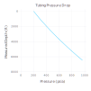
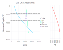
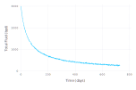
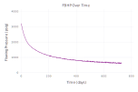

Core functionality
Creating and updating models
Model definitions are created and stored as WellModel objects. Although all of the functionality of this package is exposed as pure functions, mutating and copying WellModels is a much easier way to track and iterate on parameter sets.
Wellbores
The key component required for the pressure drop calculations is a Wellbore object that defines the flow path in terms of directional survey points (measured depth, inclination, and true vertical depth) and tubular inner diameter.
Wellbore objects can be constructed from arrays, or from CSV files with read_survey, which includes some optional convenience arguments to change delimiters, skip lines, or truncate the survey. Tubing IDs do not have to be uniform and can be specified segment to segment.
examplewell = read_survey(path = surveyfilepath, id = 2.441, maxdepth = 6500) #an outlet point at 0 MD is added if not presentWellbore with 67 points.
Ends at 6459.0' MD / 6405.05' TVD.
Max inclination 13.4°. Average ID 2.441 in.The expected format for a survey file is a comma separated file with measured depth, inclination from vertical, true vertical depth, and optionally, flowpath inner diameter:
╭───────┬─────┬────────┬───────╮
│ MD │ Inc │ TVD │ ID │
│ ft │ ° │ ft │ in │
├───────┼─────┼────────┼───────┤
│ 0.0 │ 0.0 │ 0.0 │ 2.441 │
│ 460.0 │ 0.0 │ 460.0 │ 2.441 │
│ 552.0 │ 1.5 │ 551.94 │ 2.441 │
│ 644.0 │ 1.5 │ 643.91 │ 1.995 │
│ ⋮ │ ⋮ │ ⋮ │ ⋮ │
╰───────┴─────┴────────┴───────╯See an example survey input file here.
By default, read_survey will skip a single header line and take a single ID for the entire flowpath.
Valve designs
GasliftValves objects define the valve strings in terms of measured run depth, test rack opening pressure, R value (ratio of the area of the port to the area of the bellows), and port size.
examplevalves = read_valves(path = valvefilepath)Valve design with 4 valves and bottom valve at 3395.0' MD.These can also be constructed directly or from CSV files. The expect format is valves by measured depth, test rack opening pressure @ 60° F in psig, the R ratio of the valve (effective area of the port to the area of the bellows), and the port size in 64ths inches:
╭────────┬────────┬───────┬──────────╮
│ MD │ PTRO │ R │ Port │
│ ft │ psig │ Ap/Ab │ 64ths in │
├────────┼────────┼───────┼──────────┤
│ 1813.0 │ 1005.0 │ 0.073 │ 16.0 │
│ 2375.0 │ 990.0 │ 0.073 │ 16.0 │
│ 2885.0 │ 975.0 │ 0.073 │ 16.0 │
│ 3395.0 │ 0.0 │ 0.0 │ 14.0 │
│ ⋮ │ ⋮ │ ⋮ │ ⋮ │
╰────────┴────────┴───────┴──────────╯See an example valve input file here.
By default, read_valves will skip a single header line, and orifice valves are indicated by an R-value of 0.
Models & parameter sets
WellModels do not have to be completely specified, but require defining the minimum fields for a simple pressure drop. In general, sensible defaults are selected for PVT functions. See the documentation for a list of optional fields.
Note that defining a valve string is optional if all that is desired is a normal pressure drop or temperature calculation.
model = WellModel(wellbore = examplewell, roughness = 0.00065,
valves = examplevalves,
pressurecorrelation = BeggsAndBrill,
WHP = 200, #wellhead pressure, psig
CHP = 1050, #casing pressure, psig
dp_est = 25, #estimated ΔP by segment. Not critical
temperature_method = "Shiu", #temperatures can be calculated or provided directly as a array
BHT = 160, geothermal_gradient = 0.9, #°F, °F/100'
q_o = 100, q_w = 500, #bpd
GLR = 2500, naturalGLR = 400, #scf/bbl
APIoil = 35, sg_water = 1.05, sg_gas = 0.65);Well model:
wellbore : Wellbore with 67 points.
Ends at 6459.0' MD / 6405.05' TVD.
Max inclination 13.4°. Average ID 2.441 in.
roughness : 0.00065
valves : Valve design with 4 valves and bottom valve at 3395.0' MD.
temperatureprofile : missing
temperature_method : Shiu
WHT : missing
geothermal_gradient : 0.9
BHT : 160
casing_temp_factor : 0.85
pressurecorrelation : PressureDrop.BeggsAndBrill
outlet_referenced : true
WHP : 200
CHP : 1050
dp_est : 25
dp_est_inj : 2.5
error_tolerance : 0.1
error_tolerance_inj : 0.05
q_o : 100
q_w : 500
GLR : 2500
injection_point : missing
naturalGLR : 400
APIoil : 35
sg_water : 1.05
sg_gas : 0.65
sg_gas_inj : 0.65
molFracCO2 : 0.0
molFracH2S : 0.0
molFracCO2_inj : 0.0
molFracH2S_inj : 0.0
pseudocrit_pressure_correlation : PressureDrop.HankinsonWithWichertPseudoCriticalPressure
pseudocrit_temp_correlation : PressureDrop.HankinsonWithWichertPseudoCriticalTemp
Z_correlation : PressureDrop.KareemEtAlZFactor
gas_viscosity_correlation : PressureDrop.LeeGasViscosity
solutionGORcorrelation : PressureDrop.StandingSolutionGOR
bubblepoint : PressureDrop.StandingBubblePoint
oilVolumeFactor_correlation : PressureDrop.StandingOilVolumeFactor
waterVolumeFactor_correlation : PressureDrop.GouldWaterVolumeFactor
dead_oil_viscosity_correlation : PressureDrop.GlasoDeadOilViscosity
live_oil_viscosity_correlation : PressureDrop.ChewAndConnallySaturatedOilViscosity
frictionfactor : PressureDrop.SerghideFrictionFactor
Printing a WellModel will display all of its defined and undefined fields.
An important aspect of model definitions is that they include the temperature profile. Passing a model object to a wrapper function that calculates both pressure and temperature will mutate the temperature profile associate with the model.
Pressure & temperature calculations
Pressure traverses & temperature profiles
Pressure and temperature profiles can be generated from a WellModel using pressure_and_temp! (for tubing calculations only) or pressures_and_temp! (to include casing calculations).
tubing_pressures = pressure_and_temp!(model); #note that this updates temperature in the .temperatureprofile field of the WellModel67-element Array{Float64,1}:
200.0
245.37572407761115
254.30964761005504
263.21807061167675
272.10717290933127
280.98313730062927
289.85305595952843
298.6248104048196
308.28907910882697
318.1001426268174
⋮
859.0982954570584
872.1021884338534
885.0572186756406
897.9579845330136
911.0831457681081
924.4378535697161
937.5908840507635
950.9661391150678
964.4295621365758 Several plotting functions are available to visualize the outputs.
using Gadfly #necessary to load plotting functions
plot_pressure(model, tubing_pressures, "Tubing Pressure Drop")
Pressure traverses for just tubing or just casing, utilizing an existing temperature profile, can be calculated using traverse_topdown or casing_traverse_topdown.
Gas lift analysis
The gaslift_model! function will calculate the pressure and temperature profiles, most likely operating point (assuming single-point injection), and opening and closing pressures of the valves.
tubing_pressures, casing_pressures, valvedata = gaslift_model!(model, find_injectionpoint = true,
dp_min = 100) #required minimum ΔP at depth to consider as an operating valve
plot_gaslift(model, tubing_pressures, casing_pressures, valvedata, "Gas Lift Analysis Plot")[ Info: Inferred injection depth @ 1813.0' MD.
┌ Info: Specified injection point at 1813.0' MD not explicitly included in wellbore. Using 1852.0' MD as an approximate match.
└ Use the Wellbore constructor with a set of gas lift valves to add precise injection points.
The results of the valve calculations can be printed as a table:
valve_table(valvedata)╭─────┬──────┬──────┬──────┬──────┬───────┬───────┬──────┬──────┬──────┬──────┬──────┬──────┬──────┬──────┬───────┬───────┬───────╮
│ GLV │ MD │ TVD │ PSO │ PSC │ Port │ R │ PPEF │ PTRO │ TP │ CP │ PVO │ PVC │ T_td │ T_cd │ Q_o │ Q_1.5 │ Q_1 │
│ │ ft │ ft │ psig │ psig │ 64ths │ │ % │ psig │ psig │ psig │ psig │ psig │ °F │ °F │ mcf/d │ mcf/d │ mcf/d │
├─────┼──────┼──────┼──────┼──────┼───────┼───────┼──────┼──────┼──────┼──────┼──────┼──────┼──────┼──────┼───────┼───────┼───────┤
│ 4 │ 1813 │ 1806 │ 1055 │ 1002 │ 16 │ 0.073 │ 8 │ 1005 │ 384 │ 1100 │ 1104 │ 1052 │ 132 │ 112 │ 1480 │ 1125 │ 888 │
│ 3 │ 2375 │ 2357 │ 1023 │ 979 │ 16 │ 0.073 │ 8 │ 990 │ 497 │ 1115 │ 1088 │ 1045 │ 136 │ 116 │ 1493 │ 1135 │ 896 │
│ 2 │ 2885 │ 2856 │ 990 │ 957 │ 16 │ 0.073 │ 8 │ 975 │ 611 │ 1129 │ 1069 │ 1036 │ 141 │ 119 │ 1506 │ 1144 │ 903 │
│ 1 │ 3395 │ 3355 │ 957 │ 934 │ 16 │ 0.073 │ 8 │ 960 │ 733 │ 1143 │ 1050 │ 1027 │ 145 │ 123 │ 1486 │ 1129 │ 892 │
╰─────┴──────┴──────┴──────┴──────┴───────┴───────┴──────┴──────┴──────┴──────┴──────┴──────┴──────┴──────┴───────┴───────┴───────╯The data for a valve table can be calculated directly using valve_calcs, which will interpolate pressures and temperatures at depth from known producing P/T profiles.
Bulk calculations
Pressure drops can be calculated in bulk, either by passing model arguments to functions directly, or by mutating or copying model objects.
nominal_rate(D_sei, b) = ((1-D_sei)^(-b) - 1)/b #secant decline rates to nominal rates, b ≠ 0
hyperbolic_rate(q_i, b, D_sei, t) = q_i / (1 + b * nominal_rate(D_sei, b) * t)^(1/b) #spot rate from a hyperbolic decline for t in years
# generate test data
q_i = 3000
b = 1.2
decline = 0.85
timesteps = range(0, stop = 2, step = 1/365)
declinedata = [hyperbolic_rate(q_i, b, decline, time) for time in timesteps]
noise = [randn() .* 15 for sample in timesteps]
testdata = max.(declinedata .+ noise, 0)
# check results
days = timesteps .* 365
plot(x = days, y = testdata, Geom.path,
Guide.xlabel("Time (days)"),
Guide.ylabel("Total Fluid (bpd)"),
Scale.y_continuous(format = :plain, minvalue = 0))
# set up and calculate pressure data
examplewell = read_survey(path = surveyfilepath, id = 2.441, maxdepth = 6500)
function timestep_pressure(rate, temp, watercut, GLR)
temps = linear_wellboretemp(WHT = temp, BHT = 165, wellbore = examplewell)
return traverse_topdown(wellbore = examplewell, roughness = 0.0065, temperatureprofile = temps,
pressurecorrelation = BeggsAndBrill, dp_est = 25, error_tolerance = 0.1,
q_o = rate * (1 - watercut), q_w = rate * watercut, GLR = GLR,
APIoil = 36, sg_water = 1.05, sg_gas = 0.65,
WHP = 120)[end]
end
wellhead_temps = range(125, stop = 85, length = 731)
watercuts = range(1, stop = 0.5, length = 731)
GLR = range(0, stop = 5000, length = 731)
pressures = timestep_pressure.(testdata, wellhead_temps, watercuts, GLR)
# examine outputs
plot(x = days, y = pressures, Geom.path, Theme(default_color = "purple"),
Guide.xlabel("Time (days)"),
Guide.ylabel("Flowing Pressure (psig)"),
Scale.y_continuous(format = :plain, minvalue = 0),
Guide.title("FBHP Over Time"))
Types and Functions
- Types
- Functions
traverse_topdowncasing_traverse_topdownpressure_and_temp!pressures_and_temp!gaslift_model!
Types
PressureDrop.Wellbore — Type.Wellbore: type to define a flow path as an input for pressure drop calculations
See read_survey for helper method to create a Wellbore object from deviation survey files.
Fields
md::Array{Float64, 1}: measured depth for each segment in feetinc::Array{Float64, 1}: inclination from vertical for each segment in degrees, e.g. true vertical = 0°tvd::Array{Float64, 1}: true vertical depth for each segment in feetid::Array{Float64, 1}: inner diameter for each pip segment in inches
Constructors
By default, negative depths are disallowed, and a 0 MD / 0 TVD point is added if not present, to allow graceful handling of outlet pressure definitions. To bypass both the error checking and convenience feature, pass true as the final argument to the constructor.
Wellbore(md, inc, tvd, id::Array{Float64, 1}, allow_negatives = false): defines a new Wellbore object from a survey with inner diameter defined for each segment. Lengths of each input array must be equal.
Wellbore(md, inc, tvd, id::Float64, allow_negatives = false): defines a new Wellbore object with a uniform ID along the entire flow path.
Wellbore(md, inc, tvd, id, valves::GasliftValves, allow_negatives = false): defines a new Wellbore object and adds interpolated survey points for each gas lift valve.
PressureDrop.GasliftValves — Type.GasliftValves: a type to define a string of gas lift valves for valve & pressure calculations.
Constructor: GasliftValves(md::Array, PTRO::Array, R::Array, port::Array)
Port sizes must be in integer increments of 64ths inches.
Indicate orifice valves with an R-value and PTRO of 0.
PressureDrop.WellModel — Type.WellModel: Makes it easier to iterate well models
pressure_and_temp(;model::WellModel)
Develop pressure traverse in psia and temperature profile in °F from wellhead down to datum for a WellModel object. Requires the following fields to be defined in the model:
Returns a pressure profile as an Array{Float64,1} and a temperature profile as an Array{Float64,1}, referenced to the measured depths in the original Wellbore object.
Pressure correlation functions available:
BeggsAndBrillwith Payne correction factorsHagedornAndBrownwith Griffith and Wallis bubble flow correction
Required
well::Wellbore: Wellbore object that defines segmentation/mesh, with md, tvd, inclination, and hydraulic diameterroughness: pipe wall roughness in inchestemperature_method = "linear": temperature method to use; "Shiu" for Ramey method with Shiu relaxation factor, "linear" for linear interpolationWHT = missing: wellhead temperature in °F; required fortemperature_method = "linear"geothermal_gradient = missing: geothermal gradient in °F per 100 ft; required fortemperature_method = "Shiu"BHT= bottomhole temperature in °FWHP: absolute outlet pressure (wellhead pressure) in psigdp_est: estimated starting pressure differential (in psi) to use for all segments–impacts convergence timeq_o: oil rate in stocktank barrels/dayq_w: water rate in stb/dGLR: total wellhead gas:liquid ratio, inclusive of injection gas, in scf/bblAPIoil: API gravity of the produced oilsg_water: specific gravity of produced watersg_gas: specific gravity of produced gas
Optional
injection_point = missing: injection point in MD for gas lift, above which total GLR is used, and below which natural GLR is usednaturalGLR = missing: GLR to use below point of injection, in scf/bbl- `pressurecorrelation::Function = BeggsAndBrill: pressure correlation to use
error_tolerance = 0.1: error tolerance for each segment in psimolFracCO2 = 0.0,molFracH2S = 0.0: produced gas fractions of hydrogen sulfide and CO2, [0,1]pseudocrit_pressure_correlation::Function = HankinsonWithWichertPseudoCriticalPressure: psuedocritical pressure function to usepseudocrit_temp_correlation::Function = HankinsonWithWichertPseudoCriticalTemp: pseudocritical temperature function to useZ_correlation::Function = KareemEtAlZFactor: natural gas compressibility/Z-factor correlation to usegas_viscosity_correlation::Function = LeeGasViscosity: gas viscosity correlation to usesolutionGORcorrelation::Function = StandingSolutionGOR: solution GOR correlation to usebubblepoint::Union{Function, Real} = StandingBubblePoint: either bubble point correlation or bubble point in psiaoilVolumeFactor_correlation::Function = StandingOilVolumeFactor: oil volume factor correlation to usewaterVolumeFactor_correlation::Function = GouldWaterVolumeFactor: water volume factor correlation to usedead_oil_viscosity_correlation::Function = GlasoDeadOilViscosity: dead oil viscosity correlation to uselive_oil_viscosity_correlation::Function = ChewAndConnallySaturatedOilViscosity: saturated oil viscosity correction function to usefrictionfactor::Function = SerghideFrictionFactor: correlation function for Darcy-Weisbach friction factoroutlet_referenced = true: whether to use outlet pressure (WHP) or inlet pressure (BHP) for
Functions
PressureDrop.traverse_topdown — Function.traverse_topdown(;<named arguments>)
Develop pressure traverse from wellhead down to datum in psia, returning a pressure profile as an Array{Float64,1}.
Pressure correlation functions available:
BeggsAndBrillwith Payne correction factorsHagedornAndBrownwith Griffith and Wallis bubble flow correction
Arguments
All arguments are named keyword arguments.
Required
wellbore::Wellbore: Wellbore object that defines segmentation/mesh, with md, tvd, inclination, and hydraulic diameterroughness: pipe wall roughness in inchestemperatureprofile::Array{Float64, 1}: temperature profile (in °F) as an array with matching entries for each pipe segment defined in the Wellbore inputWHP: outlet pressure (wellhead pressure) in psigdp_est: estimated starting pressure differential (in psi) to use for all segments–impacts convergence timeq_o: oil rate in stocktank barrels/dayq_w: water rate in stb/dGLR: total wellhead gas:liquid ratio, inclusive of injection gas, in scf/bblAPIoil: API gravity of the produced oilsg_water: specific gravity of produced watersg_gas: specific gravity of produced gas
Optional
injection_point = missing: injection point in MD for gas lift, above which total GLR is used, and below which natural GLR is usednaturalGLR = missing: GLR to use below point of injection, in scf/bbl- `pressurecorrelation::Function = BeggsAndBrill: pressure correlation to use
error_tolerance = 0.1: error tolerance for each segment in psimolFracCO2 = 0.0,molFracH2S = 0.0: produced gas fractions of hydrogen sulfide and CO2, [0,1]pseudocrit_pressure_correlation::Function = HankinsonWithWichertPseudoCriticalPressure: psuedocritical pressure function to usepseudocrit_temp_correlation::Function = HankinsonWithWichertPseudoCriticalTemp: pseudocritical temperature function to useZ_correlation::Function = KareemEtAlZFactor: natural gas compressibility/Z-factor correlation to usegas_viscosity_correlation::Function = LeeGasViscosity: gas viscosity correlation to usesolutionGORcorrelation::Function = StandingSolutionGOR: solution GOR correlation to usebubblepoint::Union{Function, Real} = StandingBubblePoint: either bubble point correlation or bubble point in psiaoilVolumeFactor_correlation::Function = StandingOilVolumeFactor: oil volume factor correlation to usewaterVolumeFactor_correlation::Function = GouldWaterVolumeFactor: water volume factor correlation to usedead_oil_viscosity_correlation::Function = GlasoDeadOilViscosity: dead oil viscosity correlation to uselive_oil_viscosity_correlation::Function = ChewAndConnallySaturatedOilViscosity: saturated oil viscosity correction function to usefrictionfactor::Function = SerghideFrictionFactor: correlation function for Darcy-Weisbach friction factor
traverse_topdown(;model::WellModel)
calculate top-down traverse from a WellModel object. Requires the following fields to be defined in the model:
...
PressureDrop.casing_traverse_topdown — Function.casing_traverse_topdown(;<named arguments>)
Develops pressure traverse from casing head down to datum in psia, returning a pressure profile as an Array{Float64,1}.
Uses only density and is only applicable to pure gas injection, i.e. assumes no friction loss and no liquid entrained in gas stream (reasonable assumptions for relatively dry gas taken through several compression stages and injected through relatively large casing).
Pressure inputs are in psig.
Arguments
All arguments are named keyword arguments.
Required
wellbore::Wellbore: Wellbore object that defines segmentation/mesh, with md, tvd, inclination, and hydraulic diametertemperatureprofile::Array{Float64, 1}: temperature profile (in °F) as an array with matching entries for each pipe segment defined in the Wellbore inputCHP: casing head pressure, i.e. absolute surface injection pressure in psigdp_est: estimated starting pressure differential (in psi) to use for all segments–impacts convergence timesg_gas: specific gravity of produced gas
Optional
error_tolerance = 0.1: error tolerance for each segment in psimolFracCO2 = 0.0,molFracH2S = 0.0: produced gas fractions of hydrogen sulfide and CO2, [0,1]pseudocrit_pressure_correlation::Function = HankinsonWithWichertPseudoCriticalPressure: psuedocritical pressure function to usepseudocrit_temp_correlation::Function = HankinsonWithWichertPseudoCriticalTemp: pseudocritical temperature function to useZ_correlation::Function = KareemEtAlZFactor: natural gas compressibility/Z-factor correlation to use
casing_traverse_topdown(m::WellModel)
Remaps casing traverse to work with WellModels
PressureDrop.pressure_and_temp! — Function.pressure_and_temp(;model::WellModel)
Develop pressure traverse in psia and temperature profile in °F from wellhead down to datum for a WellModel object. Requires the following fields to be defined in the model:
Returns a pressure profile as an Array{Float64,1} and updates the passed WellModel's temperature profile, referenced to the measured depths in the original Wellbore object.
Arguments
All arguments are defined in the model object; see the WellModel documentation for reference.
Pressure correlation functions available:
BeggsAndBrillwith Payne correction factorsHagedornAndBrownwith Griffith and Wallis bubble flow correction
Temperature methods available:
- "Shiu" to utilize the Ramey 1962 method with the Shiu 1980 relaxation factor correlation
- "linear" for a linear interpolation between wellhead and bottomhole temperature based on TVD
Required WellModel fields
well::Wellbore: Wellbore object that defines segmentation/mesh, with md, tvd, inclination, and hydraulic diameterroughness: pipe wall roughness in inchestemperature_method = "linear": temperature method to use; "Shiu" for Ramey method with Shiu relaxation factor, "linear" for linear interpolationWHT = missing: wellhead temperature in °F; required fortemperature_method = "linear"geothermal_gradient = missing: geothermal gradient in °F per 100 ft; required fortemperature_method = "Shiu"BHT= bottomhole temperature in °FWHP: absolute outlet pressure (wellhead pressure) in psigdp_est: estimated starting pressure differential (in psi) to use for all segments–impacts convergence timeq_o: oil rate in stocktank barrels/dayq_w: water rate in stb/dGLR: total wellhead gas:liquid ratio, inclusive of injection gas, in scf/bblAPIoil: API gravity of the produced oilsg_water: specific gravity of produced watersg_gas: specific gravity of produced gas
Optional WellModel fields
injection_point = missing: injection point in MD for gas lift, above which total GLR is used, and below which natural GLR is usednaturalGLR = missing: GLR to use below point of injection, in scf/bbl- `pressurecorrelation::Function = BeggsAndBrill: pressure correlation to use
error_tolerance = 0.1: error tolerance for each segment in psimolFracCO2 = 0.0,molFracH2S = 0.0: produced gas fractions of hydrogen sulfide and CO2, [0,1]pseudocrit_pressure_correlation::Function = HankinsonWithWichertPseudoCriticalPressure: psuedocritical pressure function to usepseudocrit_temp_correlation::Function = HankinsonWithWichertPseudoCriticalTemp: pseudocritical temperature function to useZ_correlation::Function = KareemEtAlZFactor: natural gas compressibility/Z-factor correlation to usegas_viscosity_correlation::Function = LeeGasViscosity: gas viscosity correlation to usesolutionGORcorrelation::Function = StandingSolutionGOR: solution GOR correlation to usebubblepoint::Union{Function, Real} = StandingBubblePoint: either bubble point correlation or bubble point in psiaoilVolumeFactor_correlation::Function = StandingOilVolumeFactor: oil volume factor correlation to usewaterVolumeFactor_correlation::Function = GouldWaterVolumeFactor: water volume factor correlation to usedead_oil_viscosity_correlation::Function = GlasoDeadOilViscosity: dead oil viscosity correlation to uselive_oil_viscosity_correlation::Function = ChewAndConnallySaturatedOilViscosity: saturated oil viscosity correction function to usefrictionfactor::Function = SerghideFrictionFactor: correlation function for Darcy-Weisbach friction factoroutlet_referenced = true: whether to use outlet pressure (WHP) or inlet pressure (BHP) for starting point
PressureDrop.pressures_and_temp! — Function.pressures_and_temp!(m::WellModel)
Returns a tubing pressure profile as an Array{Float64,1}, casing pressure profile as an Array{Float64,1}, and updates the passed WellModel's temperature profile, referenced to the measured depths in the original Wellbore object.
Arguments
See WellModel documentation.
PressureDrop.gaslift_model! — Function.gaslift_model!(m::WellModel; find_injectionpoint::Bool = false, dp_min = 100)
Returns a tubing pressure profile as an Array{Float64,1}, casing pressure profile as an Array{Float64,1}, valve data table, and updates the passed WellModel's temperature profile,
Arguments
See WellModel documentation.
find_injectionpoint::Bool = false: whether to automatically infer the injection point (taken as the lowest reasonable point of lift based on differential pressure)*dp_min = 100: minimum casing-tubing differential pressure at depth to infer an injection point
*"greedy opening" heuristic: select lowest non-orifice valve where CP @ depth is within operating envelope (below opening pressure but still above closing pressure) and has greater than the indicated differential pressure (dp_min)